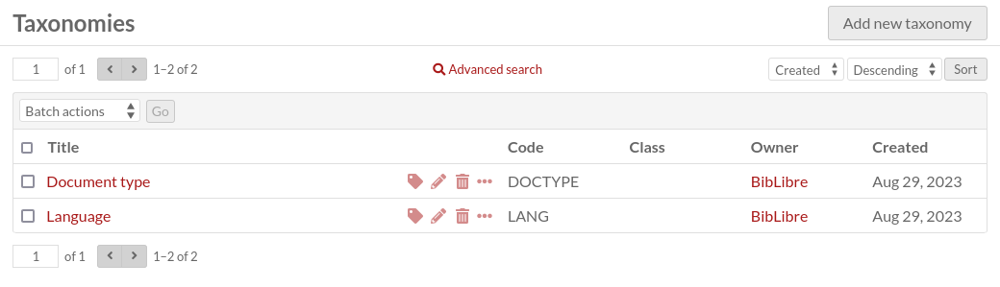
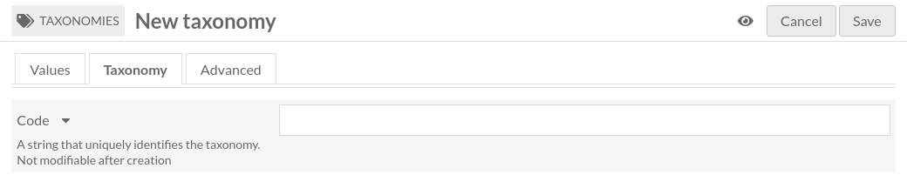

Taxonomies
Une taxonomie est un groupe de termes de taxonomie. C’est un moyen de construire un vocabulaire contrôlé dans Omeka S.
Une taxonomie est aussi une ressource Omeka S (comme les contenus, collections et média), ce qui signifie:
elle peut être liée à des contenus, collections et média comme n’importe quelle autre ressource Omeka S (elle peut être liée dans les annotations également);
elle peut être décrite comme n’importe quelle autre ressource (modèle de ressource, classe, propriétés, annotations);
elle peut avoir une vignette.
Une taxonomie a un identifiant unique (parmi les autres taxonomies), appelé Code.
Onglet Taxonomies
Les taxonomies sont listées dans l’onglet Taxonomies (avec l’icône d’étiquette) dans la navigation de gauche du tableau de bord d’administration.
Cette page est très similaire à l’onglet Contenus. Veuillez vous référer à cette documentation pour les informations générales.
Il y a quelques différences:
Il y a une colonne supplémentaire montant le Code de la taxonomie.
Les taxonomies peuvent être triées par Code.
Il y a une icône supplémentaire pour lister les termes de taxonomie (étiquette).
Ajouter une taxonomie
Pour ajouter une nouvelle taxonomie, commencer par sélectionner le bouton « Ajouter une nouvelle taxonomie ».
Valeurs
L’onglet Valeurs permet de saisir les métadonnées, comme le titre, la description, etc.

Il est identique à l’onglet Valeurs des Contenus.
Taxonomie
L’onglet Taxonomie permet de saisir l’identifiant unique (Code) de la taxonomie
Avancé
L’onglet Avancé permet de sélectionner une vignette